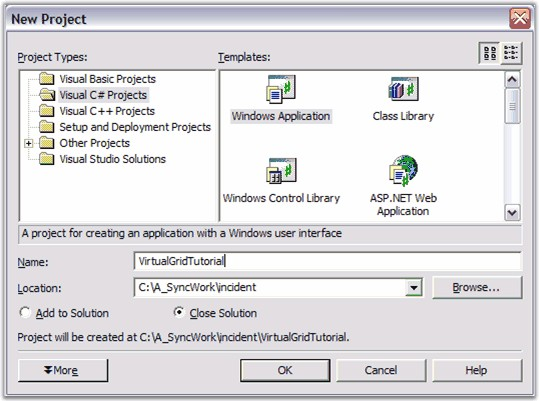

1. In Visual Studio .NET, open File menu and select New Project. Then using either VB.NET or C#, select the Windows Application project template to create a new Windows Forms project, naming it VirtualGridTutorial.

Figure 61: Creating New Project
2. Create the data source
You can set any external data source that knows how to return a value based on the row-column parameters that are passed to it. In addition, the external data source should have knowledge of the number of rows and columns. This last requirement can be relaxed, but if the data source knows the number of rows and columns, it simplifies things. Our tutorial will assume that this is the case.
The external data source will be a class with two public properties (RowCount and ColCount) and a two-parameter class indexer that will return the integer value that is associated with the two integers (row and column) that are passed in as the indexes. The exact mechanics of this class are not material to this tutorial. This class simply provides the data on demand. How it stores it or how it gets it, plays no role in a virtual grid.
3. To add the DataSource class, right-click the project in the Solution Explorer, point to Add, click Class, and add a class named 'ExternalData'.
4. Copy the following code into this file. Notice that the constructor accepts a row and column count, and then populates an integer array. You can modify this class in any way you like, so long as you define the class indexer and the RowCount and ColCount properties, so that the virtual grid can access the data when needed.
|
[C#]
public class ExternalData { private int _rowCount; private int _colCount; private int[,] _data;
public ExternalData(int rows, int cols) { // Set number of rows and number of columns. _rowCount = rows; _colCount = cols;
// Allocate memory to store data values. _data = new int[_rowCount, _colCount];
// Just set the data. for(int i = 0; i < RowCount; ++i) for(int j = 0; j < ColCount; ++j) _data[i,j] = 100 * i + j; }
// Set Properties. public virtual int this[int row, int col] { get{ return _data[row, col];} set{ _data[row, col] = value;} }
public virtual int RowCount { get{return _rowCount;} }
public virtual int ColCount { get{ return _colCount;} } } |
|
[VB.NET]
Public Class ExternalData Private _rowCount As Integer Private _colCount As Integer Private _data(,) As Int32
Public Sub New(ByVal rows As Integer, ByVal cols As Integer) MyBase.New()
' Set number of rows and number of columns. _rowCount = rows _colCount = cols
' Allocate memory to store data values. _data = New Integer(_rowCount - 1, _colCount - 1) {}
' Just set data. Dim i As Integer i = 0 Do While (i < RowCount) Dim j As Integer j = 0 Do While (j < ColCount) _data(i, j) = ((100 * i) + j) j = (j + 1) Loop i = (i + 1) Loop End Sub
' Set Properties. Public Overridable ReadOnly Property RowCount() As Integer Get Return _rowCount End Get End Property
Public Overridable ReadOnly Property ColCount() As Integer Get Return _colCount End Get End Property
Default Public Overridable Property Item(ByVal row As Integer, ByVal _ col As Integer) As Integer Get Return _data(row, col) End Get
Set(ByVal Value As Integer) _data(row, col) = Value End Set End Property End Class |